from abc import ABC, abstractmethod, abstractproperty
from typing import Optional
from cmdstanpy import CmdStanModel
from typing import Optional
from enum import Enum
from dataclasses import dataclass
from pandas import DataFrame
from arviz import InferenceData, from_cmdstanpy
class StanModel(ABC):
"""An abstract base class for STAN models"""
def __init__(self, **kwargs):
self.model = CmdStanModel(stan_file=self.stan_file)
self.init_params = kwargs
@abstractproperty
def stan_file(self) -> str:
raise NotImplementedError
@abstractmethod
def construct_model_data(self, data: DataFrame) -> dict:
raise NotImplementedError
def _validate_data(self) -> None:
self.data_class(**self.model_data)
def fit(
self,
data: DataFrame,
save_dir: Optional[str] = None,
verbose: bool = False,
map_initialization: bool = True,
seed: int = 40392,
iter_warmup: int = 50_000,
iter_sampling: int = 50_000,
**kwargs
) -> InferenceData:
if verbose:
print("Constructing model data...")
self.model_data = self.construct_model_data(data)
self._validate_data()
if map_initialization:
if verbose:
print("Fitting model with MAP initialization...")
map_estimate = self._compute_map_estimate(seed)
if "inits" in kwargs:
# inits passed to fit() should override MAP
map_estimate.update(kwargs["inits"])
kwargs["inits"] = map_estimate
elif verbose:
print("Fitting model...")
# sample from the posterior starting at the MAP
self.raw_model_fit = self.model.sample(
data=self.model_data,
iter_warmup=iter_warmup,
iter_sampling=iter_sampling,
**kwargs
)
if save_dir is not None:
if verbose:
print("Saving model...")
self.save(save_dir)
if verbose:
print("Running MCMC diagnostics...")
print()
print(self.diagnose())
return self
def _compute_map_estimate(self, seed: int) -> dict:
# compute MAP fit
self.map_model_fit = self.model.optimize(
data=self.model_data,
seed=seed,
)
return self.map_model_fit.stan_variables()
@property
def model_fit(self) -> InferenceData:
return from_cmdstanpy(
self.raw_model_fit,
coords=self.coords,
dims=self.dims
)
def save(self, save_dir: str = "."):
self.raw_model_fit.save_csvfiles(save_dir)
@classmethod
def from_csv(cls, path: str, **kwargs) -> 'StanModel':
model = cls(**kwargs)
model.raw_model_fit = cmdstanpy.from_csv(path)
def diagnose(self) -> str:
return self.raw_model_fit.diagnose()Model fitting and comparison
As in Module 1, we will implement a relatively thin wrapper around cmdstanpy’s CmdStanModel class. This abstract base class (ABC) is effectively the same as our IslandEffectsModel ABC. The important differences are: (i) that it accepts kwargs in StanModel.__init__, which we will use to pass in information for setting the priors on the by-context or by-verb intercepts; and (ii) that we don’t implement a default StanModel.construct_model_data method. The reason for not implementing this method is that we will use StanModel as an ABC for both the norming models and the projection models.
Also as in Module 1, we’ll want a way of mapping (or hashing) columns of our data to indices, which we’ll use for hashing verb, context, and subject identifiers. This version of hash_series additionally allows us to specify the hashmap via the categories parameter, which will be necessary for ensuring we are associating the correct prior on by-context intercepts with the correct context.
from numpy import ndarray
from pandas import Series, CategoricalDtype
def hash_series(series: Series, categories: Optional[list[str]] = None, indexation: int=1) -> tuple[ndarray, ndarray]:
"""Hash a series to numeric codes
Parameters
----------
column
The series to hash
index
The starting index (defaults to 1)
"""
# enforce 0- or 1-indexation
if indexation not in [0, 1]:
raise ValueError("Must choose either 0- or 1-indexation.")
# convert the series to a category
if categories is None:
category_series = series.astype("category")
else:
cat_type = CategoricalDtype(categories=categories)
category_series = series.astype(cat_type)
# get the hash
hash_map = category_series.cat.categories.values
# map to one-indexed codes
hashed_series = (category_series.cat.codes + indexation).values
return hash_map, hashed_seriesModel of prior beliefs
Our model for estimating prior beliefs from Degen and Tonhauser’s norming data will subclass StanModel ABC and look similar to the models we wrote for Module 1. The main addition we make is a property NormingModel.context_posterior_estimates which returns estimates of \(\mu^\text{context}_c\) and \(\sigma^\text{context}_c\), assuming that \(\rho_c \mid \mathbf{y}_\text{norming} \sim \mathcal{N}(\mu^\text{context}_c, \sigma^\text{context}_c)\).
from scipy.stats import norm
from pandas import merge
@dataclass
class NormingData:
N_resp: int # number of responses
N_context: int # number of contexts
N_subj: int # number of subjects
context: ndarray # context corresponding to response n
subj: ndarray # subject who gave response n
resp: ndarray # likert scale acceptability judgment responses
class NormingModel(StanModel):
"""A STAN model for Degen and Tonhauser's (2021) norming data"""
stan_file = "models/norming-model/norming-model.stan"
data_class = NormingData
def __init__(self):
super().__init__()
def construct_context_info(self, data: DataFrame):
self.context_info = data[["item", "prompt", "fact"]].drop_duplicates(ignore_index=True)
self.context_info = self.context_info.rename(columns={"item": "context"})
def construct_model_data(self, data: DataFrame):
self.construct_context_info(data)
if hasattr(self, "subj_hash_map"):
_, subj_hashed = hash_series(data.workerid, self.subj_hash_map)
else:
self.subj_hash_map, subj_hashed = hash_series(data.workerid)
if hasattr(self, "context_hash_map"):
_, context_hashed = hash_series(data.item, self.context_hash_map)
else:
self.context_hash_map, context_hashed = hash_series(data.item)
self.coords = {
"subj": self.subj_hash_map,
"context": self.context_hash_map
}
self.dims = {
"context_intercept": ["context"],
"context_prob": ["context"],
}
self.model_data = {
"N_resp": data.shape[0],
"N_context": self.context_hash_map.shape[0],
"N_subj": self.subj_hash_map.shape[0],
"context": context_hashed,
"subj": subj_hashed,
"resp": data.response.astype(float).values
}
return self.model_data
@property
def context_posterior_estimates(self):
context_intercept_samples = self.raw_model_fit.stan_variable("context_intercept")
params = []
for i in range(context_intercept_samples.shape[1]):
mu, sigma = norm.fit(context_intercept_samples[:,i])
context = self.context_hash_map[i]
params.append([context, mu, sigma])
params_df = DataFrame(params, columns=["context", "context_mean", "context_std"])
params_df["order"] = params_df.index
params_df = merge(params_df, self.context_info).sort_values("order")
return params_df[["fact", "context", "prompt", "context_mean", "context_std", "order"]]Load norming data
import os
from pandas import read_csv
data_dir = "data/"
def load_norming_data(fname: str) -> DataFrame:
data = read_csv(fname, index_col=0)
data = data[~data.item.isin(["F1", "F2"])]
return data.drop(columns="comments")
data_norming = load_norming_data(
os.path.join(
data_dir,
"projective-probability/results/1-prior/data/cd.csv"
)
)Silence STAN logger
import logging
logger = logging.getLogger('cmdstanpy')
logger.addHandler(logging.NullHandler())
logger.propagate = False
logger.setLevel(logging.CRITICAL)Fitting the model
We can then fit this model to the norming data.
norming_model = NormingModel()
_ = norming_model.fit(
data_norming, map_initialization=False
)Investigating the fit
In plotting the posterior samples for \(\rho^\text{context}_c\), we observe a clear effect of itemType–both in log-odds space…
from arviz import plot_forest
_ = plot_forest(
norming_model.model_fit,
var_names=["context_intercept"],
combined=True,
figsize=(11.5, 10)
)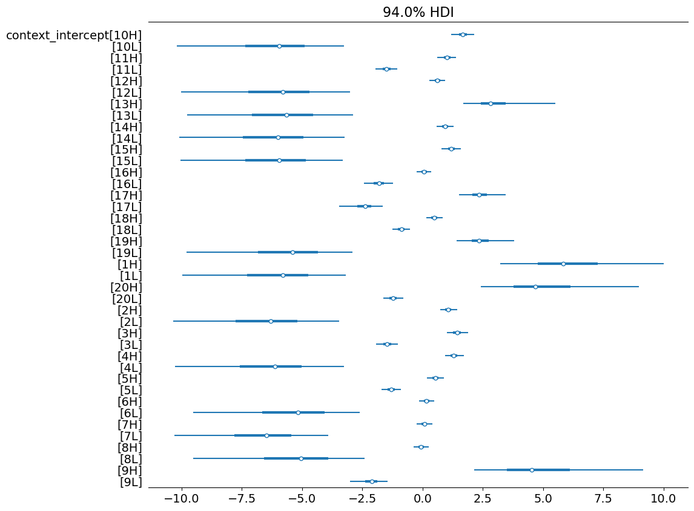
…and in probability space.
_ = plot_forest(
norming_model.model_fit,
var_names=["context_prob"],
combined=True,
figsize=(11.5, 10)
)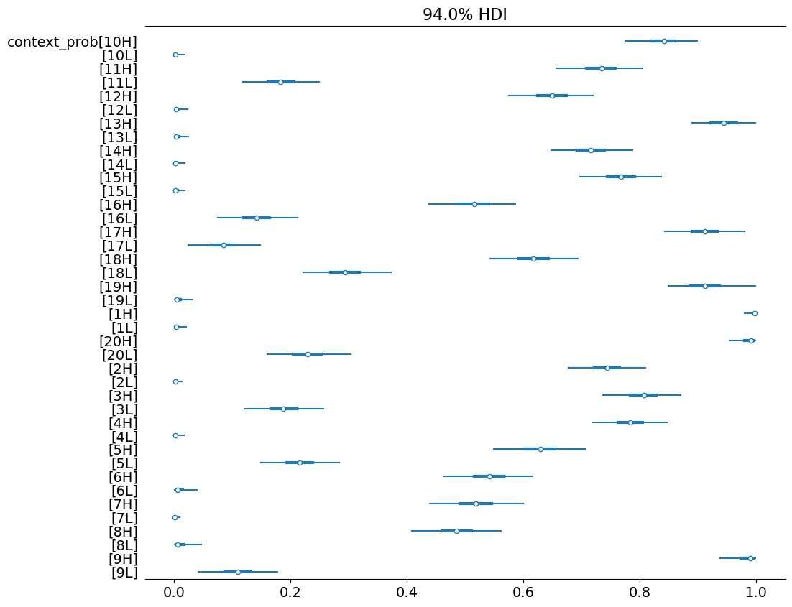
If we look at the concrete example we looked at here, we see that these posterior estimates accord with expectation.
from scipy.special import expit
from pandas import merge, melt
# the norming data for 10H and 10L
data_norming_sub = data_norming.query('item.isin(["10H", "10L"])')
# the samples from the posterior for 10H and 10L
samples = DataFrame(
norming_model.raw_model_fit.stan_variable("context_intercept"),
columns=norming_model.context_hash_map
)
samples = merge(
melt(samples, var_name="context", value_name="logodds"),
norming_model.context_info
)
samples["prob"] = expit(samples.logodds)
samples["itemType"] = samples.context.map(lambda x: x[-1])
samples_sub = samples.query('context.isin(["10H", "10L"])')| context | fact | prompt | logodds | prob | |
|---|---|---|---|---|---|
| 0 | 10H | Zoe is a math major. | How likely is it that Zoe calculated the tip? | 1.85264 | 0.864437 |
| 1 | 10H | Zoe is a math major. | How likely is it that Zoe calculated the tip? | 1.72780 | 0.849131 |
| 2 | 10H | Zoe is a math major. | How likely is it that Zoe calculated the tip? | 1.79174 | 0.857140 |
| 3 | 10H | Zoe is a math major. | How likely is it that Zoe calculated the tip? | 1.88675 | 0.868385 |
| 4 | 10H | Zoe is a math major. | How likely is it that Zoe calculated the tip? | 1.72497 | 0.848768 |
| ... | ... | ... | ... | ... | ... |
| 15995 | 10L | Zoe is 5 years old. | How likely is it that Zoe calculated the tip? | -7.80021 | 0.000409 |
| 15996 | 10L | Zoe is 5 years old. | How likely is it that Zoe calculated the tip? | -6.95483 | 0.000953 |
| 15997 | 10L | Zoe is 5 years old. | How likely is it that Zoe calculated the tip? | -3.82970 | 0.021255 |
| 15998 | 10L | Zoe is 5 years old. | How likely is it that Zoe calculated the tip? | -5.37417 | 0.004613 |
| 15999 | 10L | Zoe is 5 years old. | How likely is it that Zoe calculated the tip? | -5.15523 | 0.005736 |
16000 rows × 5 columns
Plotting code
from matplotlib.pyplot import subplots
from seaborn import histplot
fig, (ax1, ax2) = subplots(1, 2, figsize=(10, 4))
fig.suptitle("How likely is it that Zoe calculated the tip?")
ax1.set_title("Distribution of responses")
p = histplot(
data=data_norming_sub, x="response", hue="fact",
hue_order=["Zoe is 5 years old.", "Zoe is a math major."],
bins=15,
ax=ax1,
stat="density"
)
ax2.set_title("Samples from the posterior")
p = histplot(
data=samples_sub, x="prob", hue="fact",
hue_order=["Zoe is 5 years old.", "Zoe is a math major."],
bins=30,
ax=ax2,
stat="density"
)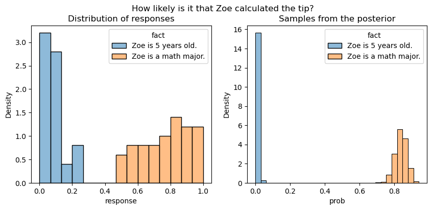
Note that the posterior samples are for what amounts to the mean response, so we don’t expect the distribution of samples to be the same as the distribution of responses.
Estimating context-specific priors
Our aim in fitting this model is to be able to estimate context-specific priors. Ideally, we could just use the samples from the prior visualized above, but we can’t for practical reasons: STAN needs a known functional form for the prior. That is the point of trying to estimate \(\mu^\text{context}_c\) and \(\sigma^\text{context}_c\) under the assumption that \(\rho_c \mid \mathbf{y}_\text{norming} \sim \mathcal{N}(\mu^\text{context}_c, \sigma^\text{context}_c)\).
context_posterior_estimates = norming_model.context_posterior_estimates
context_posterior_estimates["itemType"] = context_posterior_estimates.context.map(lambda x: x[-1])
context_posterior_estimates = context_posterior_estimates.set_index("context")Plotting code
p = histplot(
data=context_posterior_estimates, x="context_mean",
hue="itemType", hue_order=["L", "H"], bins=15
)
p.set_title("Distribution of means for context-specific priors")
_ = p.set_xlabel(r"$\mu_c$")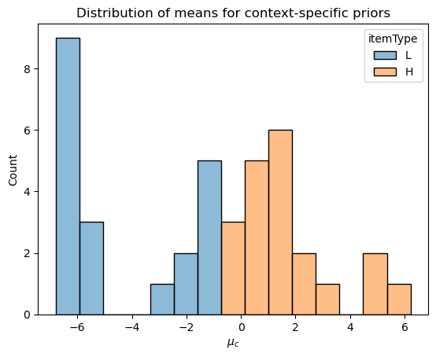
To assess how good this assumption of normality is, we can compare the empirical CDF derived from the posterior samples with the normal CDF implied by \(\mu^\text{context}_c\) and \(\sigma^\text{context}_c\) for a particular context \(c\).
When \(\mu_c\) is in the middle of the scale, the normal approximation is effectively perfect.
Plotting code
from numpy import mgrid
from scipy.special import logit
from statsmodels.distributions.empirical_distribution import ECDF
from matplotlib.pyplot import subplot, Axes
def plot_context_intercept_posterior(context_id: str, ax: Axes, axis: str="unit", plot_diff: bool=True):
context_estimates = context_posterior_estimates.loc[context_id]
estimated_dist = norm(context_estimates.context_mean, context_estimates.context_std)
samples = norming_model.raw_model_fit.stan_variable("context_intercept")[:,context_estimates.order]
if axis == "unit":
x_axis = mgrid[0.01:1:0.01]
samples = expit(samples)
ax.plot(
x_axis,
ECDF(samples)(x_axis),
label="ECDF"
)
ax.plot(
x_axis,
estimated_dist.cdf(logit(x_axis)),
label="Normal approximation"
)
if plot_diff:
ax.plot(
x_axis,
ECDF(samples)(x_axis) - estimated_dist.cdf(logit(x_axis)),
label="difference"
)
elif axis=="reals":
x_axis = mgrid[samples.min():samples.max():0.01]
ax.plot(
x_axis,
ECDF(samples)(x_axis),
label="ECDF"
)
ax.plot(
x_axis, estimated_dist.cdf(x_axis),
label="Normal approximation"
)
if plot_diff:
ax.plot(
x_axis,
ECDF(samples)(x_axis) - estimated_dist.cdf(x_axis),
label="Difference"
)
else:
raise ValueError("'axis' must be \"unit\" or \"reals\".")
return ax
fig, (ax1, ax2) = subplots(1, 2, figsize=(10, 4))
fig.suptitle("Josh is a 5-year old boy.\nHow likely is it that Josh learned to ride a bike yesterday?")
plot_context_intercept_posterior("16H", axis="reals", ax=ax1)
plot_context_intercept_posterior("16H", axis="unit", ax=ax2)
ax1.legend()
ax1.set_xlabel("Log-odds")
_ = ax2.set_xlabel("Probability")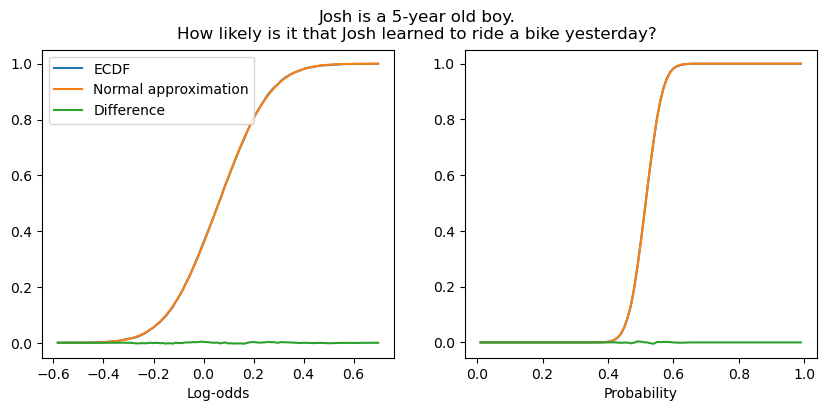
When the likelihood is low, the approximation is slightly worse, though it remains quite good.
fig, (ax1, ax2) = subplots(1, 2, figsize=(10, 4))
fig.suptitle("Isabella is a vegetarian.\nHow likely is it that Isabella ate a steak on Sunday?")
plot_context_intercept_posterior("7L", axis="reals", ax=ax1)
plot_context_intercept_posterior("7L", axis="unit", ax=ax2)
ax1.legend()
ax1.set_xlabel("Log-odds")
_ = ax2.set_xlabel("Probability")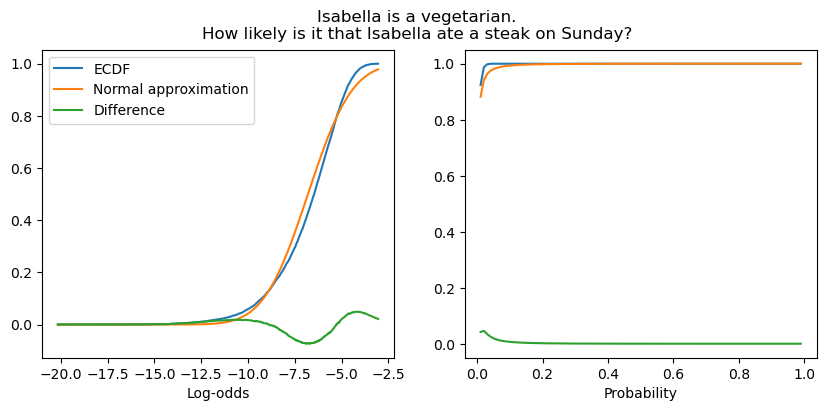
A similar phenomenon is observed when the mean is high–though, again, the approximation remains quite good.
Plotting code
fig, (ax1, ax2) = subplots(1, 2, figsize=(10, 4))
fig.suptitle("Mary is taking a prenatal yoga class.\nHow likely is it that Mary is pregnant?")
plot_context_intercept_posterior("1H", axis="reals", ax=ax1)
plot_context_intercept_posterior("1H", axis="unit", ax=ax2)
ax1.legend()
ax1.set_xlabel("Log-odds")
_ = ax2.set_xlabel("Probability")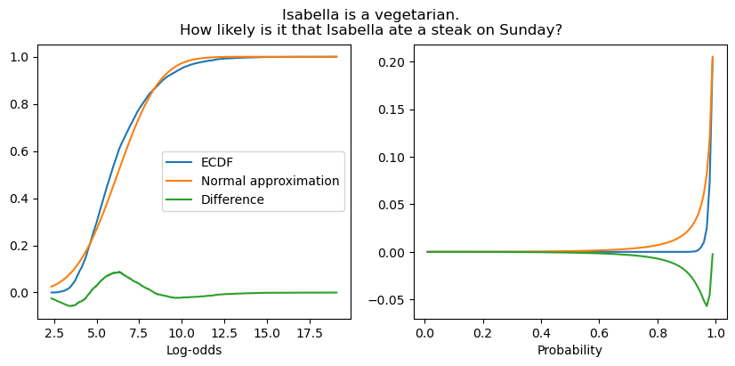
Models of projection
Turning now to the models of the projection data: we’ll also implement these as a subclass of our StanModel ABC. Because there are a few different versions of this model we’ll want to use–one that uses context-specific priors and another that uses verb-specific priors–we’ll need to set this class up in a slightly more complicated way. Basically, we’ll store different blocks of STAN code in different files and have class construct the full model specification on the fly based on the parameters to ProjectionModel.__init__.
To actually use the estimates for context- or verb-specific priors from some other model fit, we’ll additionally need to pass that fit model to ProjectionModel.__init__. This makes the initialization logic–as well as the data construction logic–somewhat complex, while keeping the core fitting procedure the same.
from numpy import zeros, ones
@dataclass
class ProjectionData(NormingData):
N_verb: int # number of verbs
verb: ndarray # verb corresponding to response n
verb_mean: ndarray # the verb means inferred from a previous model fit
verb_std: ndarray # the verb standard deviations inferred from a previous model fit
context_mean: ndarray # the context means inferred from the norming data
context_std: ndarray # the context standard deviations inferred from the norming datafrom typing import Union
parameters_and_model_block_files = {
"no_priors_fixed": "parameters-and-model-block.stan",
"verb_priors_fixed": "parameters-and-model-block-verb-prior-fixed.stan",
"context_priors_fixed": "parameters-and-model-block-context-prior-fixed.stan",
"both_priors_fixed": "parameters-and-model-block-context-and-verb-priors-fixed.stan",
}
class ProjectionModel(StanModel):
stan_data_block_file = "models/projection-model/data-block.stan"
stan_generated_quantities_block_file = "models/projection-model/generated-quantities-block.stan"
data_class = ProjectionData
def __init__(
self, prior_model: Optional[Union[NormingModel, 'ProjectionModel']] = None,
use_context_prior: bool = True
):
self.prior_model = prior_model
self.use_context_priors = use_context_prior and prior_model is not None
self.use_verb_priors = hasattr(
prior_model, "verb_posterior_estimates"
)
if self.use_context_priors and self.use_verb_priors:
print("Model initialized with context- and verb-specific priors derived "
"from context- and verb-specific posteriors from prior_model.")
self.context_hash_map = prior_model.context_hash_map
self.verb_hash_map = prior_model.verb_hash_map
self.stan_parameters_and_model_block_file = os.path.join(
"models/projection-model/parameters-and-model-block/",
parameters_and_model_block_files["both_priors_fixed"]
)
elif self.use_context_priors:
print("Model initialized with context-specific priors derived "
"from context-specific posteriors from prior_model.")
self.context_hash_map = prior_model.context_hash_map
self.stan_parameters_and_model_block_file = os.path.join(
"models/projection-model/parameters-and-model-block/",
parameters_and_model_block_files["context_priors_fixed"]
)
elif self.use_verb_priors:
print("Model initialized with verb-specific priors derived "
"from verb-specific posteriors from prior_model.")
self.verb_hash_map = prior_model.verb_hash_map
self.stan_parameters_and_model_block_file = os.path.join(
"models/projection-model/parameters-and-model-block/",
parameters_and_model_block_files["verb_priors_fixed"]
)
else:
self.stan_parameters_and_model_block_file = os.path.join(
"models/projection-model/parameters-and-model-block/",
parameters_and_model_block_files["no_priors_fixed"]
)
self._write_stan_file()
super().__init__()
def _write_stan_file(self):
functions_block = open(self.stan_functions_block_file, "r").read()
data_block = open(self.stan_data_block_file, "r").read()
parameters_and_model_block = open(self.stan_parameters_and_model_block_file, "r").read()
generated_quantities_block = open(self.stan_generated_quantities_block_file, "r").read()
print(f"Writing STAN file to {self.stan_file}...")
with open(self.stan_file, "w") as f:
f.write(functions_block+"\n\n")
f.write(data_block+"\n\n")
f.write(parameters_and_model_block+"\n\n")
f.write(generated_quantities_block)
@abstractproperty
def stan_functions_block_file(self):
raise NotImplementedError
def construct_context_info(self, data: DataFrame):
if hasattr(self.prior_model, "context_info"):
self.context_info = self.prior_model.context_info
else:
data["prompt"] = data["content"]
NormingModel.construct_context_info(self, data)
def construct_model_data(self, data: DataFrame):
self.model_data = NormingModel.construct_model_data(self, data)
if hasattr(self, "verb_hash_map"):
_, verb_hashed = hash_series(data.verb, self.verb_hash_map)
else:
self.verb_hash_map, verb_hashed = hash_series(data.verb)
self.coords.update({
"verb": self.verb_hash_map
})
self.dims.update({
"verb_intercept": ["verb"],
"verb_prob": ["verb"]
})
self.model_data.update({
"N_verb": self.verb_hash_map.shape[0],
"verb": verb_hashed
})
if self.use_context_priors:
self.model_data.update({
"context_mean": self.context_prior_estimates.context_mean.values,
"context_std": self.context_prior_estimates.context_std.values
})
else:
self.model_data.update({
"context_mean": zeros(self.model_data["N_context"]),
"context_std": ones(self.model_data["N_context"]),
})
if self.use_verb_priors:
self.model_data.update({
"verb_mean": self.verb_prior_estimates.verb_mean.values,
"verb_std": self.verb_prior_estimates.verb_std.values,
})
else:
self.model_data.update({
"verb_mean": zeros(self.model_data["N_verb"]),
"verb_std": ones(self.model_data["N_verb"]),
})
return self.model_data
@property
def context_prior_estimates(self):
if self.use_context_priors:
return self.prior_model.context_posterior_estimates
else:
raise AttributeError("no prior_model supplied for context priors")
@property
def context_posterior_estimates(self):
context_intercept_samples = self.raw_model_fit.stan_variable("context_intercept")
params = []
for i in range(context_intercept_samples.shape[1]):
mu, sigma = norm.fit(context_intercept_samples[:,i])
context = self.context_hash_map[i]
params.append([context, mu, sigma])
params_df = DataFrame(params, columns=["context", "context_mean", "context_std"])
params_df["order"] = params_df.index
params_df = merge(params_df, self.context_info).sort_values("order")
return params_df[["fact", "context", "prompt", "context_mean", "context_std", "order"]]
@property
def verb_prior_estimates(self):
if self.use_verb_priors:
return self.prior_model.verb_posterior_estimates
else:
raise AttributeError("prior_model must have verb_posterior_estimates")
@property
def verb_posterior_estimates(self):
verb_intercept_samples = self.raw_model_fit.stan_variable("verb_intercept")
params = []
for i in range(verb_intercept_samples.shape[1]):
mu, sigma = norm.fit(verb_intercept_samples[:,i])
verb = self.verb_hash_map[i]
params.append([verb, mu, sigma])
params_df = DataFrame(params, columns=["verb", "verb_mean", "verb_std"])
params_df["order"] = params_df.index
return params_dfTo implement a particular subtype of projection model, we then simply need to define a subclass that specifies where the functions block is located–remember, we factored the models such that they differ only in their definitions of the likelihood function–and where to write the full model code out to.
class FullyDiscreteProjectionModel(ProjectionModel):
stan_functions_block_file = "models/projection-model/fully-discrete/fully-discrete-likelihoods.stan"
stan_file = "models/projection-model/fully-discrete/fully-discrete-model.stan"
class VerbDiscreteProjectionModel(ProjectionModel):
stan_functions_block_file = "models/projection-model/verb-discrete/verb-discrete-likelihoods.stan"
stan_file = "models/projection-model/verb-discrete/verb-discrete-model.stan"
class ContextDiscreteProjectionModel(ProjectionModel):
stan_functions_block_file = "models/projection-model/context-discrete/context-discrete-likelihoods.stan"
stan_file = "models/projection-model/context-discrete/context-discrete-model.stan"
class FullyGradientProjectionModel(ProjectionModel):
stan_functions_block_file = "models/projection-model/fully-gradient/fully-gradient-likelihoods.stan"
stan_file = "models/projection-model/fully-gradient/fully-gradient-model.stan"Load norming data
def load_projection_data(fname: str) -> DataFrame:
data = read_csv(fname, index_col=0)
if "comments" in data.columns:
data = data.drop(columns="comments")
data = data[data.trigger_class != "control"]
data["itemType"] = data.fact_type.str.replace("fact", "")
data["item"] = data.contentNr.astype(str) + data.fact_type.str.replace("fact", "")
return data
data_projection = load_projection_data(
os.path.join(
data_dir,
"projective-probability/results/3-projectivity/data/cd.csv"
)
)Fitting the model
We can then fit each of the models. We’ll look at what different models learn about the verbs in more detail once we’ve fit them all and run our model comparison.
fully_discrete_projection_model = FullyDiscreteProjectionModel(norming_model)
_ = fully_discrete_projection_model.fit(data_projection)verb_discrete_projection_model = VerbDiscreteProjectionModel(norming_model)
_ = verb_discrete_projection_model.fit(data_projection)context_discrete_projection_model = ContextDiscreteProjectionModel(norming_model)
context_discrete_projection_model.fit(data_projection)fully_gradient_projection_model = FullyGradientProjectionModel(norming_model)
_ = fully_gradient_projection_model.fit(data_projection)Model comparison
We can now run model comparison.
from arviz import compare, plot_compare
models = {
"Verb Discrete\nContext Discrete": fully_discrete_projection_model,
"Verb Discrete\nContext Gradient": verb_discrete_projection_model,
"Verb Gradient\nContext Discrete": context_discrete_projection_model,
"Verb Gradient\nContext Gradient": fully_gradient_projection_model
}
projection_model_comparison = compare({
m_name: m.model_fit for m_name, m in models.items()
})Plotting code
_ = plot_compare(projection_model_comparison)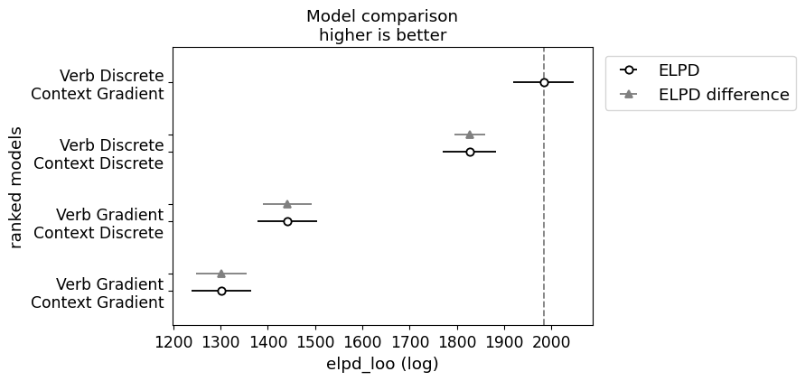
The main thing to note here is that both models associated with the indeterminacy hypothesis dominate both models associated with the fundamental gradience hypothesis, with the verb discrete model performing the best by far.
Investigating the fits
We can now turn to understanding how each model fits the data. To do this, we can look at the probabilities associated with each verb.
from pandas import concat
verb_probs = []
for m_name, m in models.items():
verb_probs_sub = DataFrame(
m.raw_model_fit.stan_variable("verb_prob"),
columns=m.verb_hash_map
)
verb_probs_sub["model"] = m_name
verb_probs.append(verb_probs_sub)
verb_probs = concat(verb_probs)
verb_probs = melt(verb_probs, id_vars="model")| model | variable | value | |
|---|---|---|---|
| 0 | Verb Discrete\nContext Discrete | acknowledge | 2.699850e-01 |
| 1 | Verb Discrete\nContext Discrete | acknowledge | 2.912600e-01 |
| 2 | Verb Discrete\nContext Discrete | acknowledge | 2.696550e-01 |
| 3 | Verb Discrete\nContext Discrete | acknowledge | 1.921890e-01 |
| 4 | Verb Discrete\nContext Discrete | acknowledge | 2.014510e-01 |
| ... | ... | ... | ... |
| 639995 | Verb Gradient\nContext Gradient | think | 4.363940e-22 |
| 639996 | Verb Gradient\nContext Gradient | think | 6.227660e-15 |
| 639997 | Verb Gradient\nContext Gradient | think | 1.147610e-17 |
| 639998 | Verb Gradient\nContext Gradient | think | 1.003010e-17 |
| 639999 | Verb Gradient\nContext Gradient | think | 2.235940e-10 |
640000 rows × 3 columns
Plotting code
from matplotlib.pyplot import subplots
from seaborn import boxplot
verb_probs_fully_gradient = verb_probs[verb_probs.model=="Verb Gradient\nContext Gradient"]
verb_order = verb_probs_fully_gradient.groupby("variable")["value"].mean()
verb_order = verb_order.sort_values(ascending=False)
model_order = verb_probs.groupby("model")["value"].max()
model_order = model_order.sort_values(ascending=False)
fig, ax = subplots(figsize=(11.5, 14))
_ = boxplot(
verb_probs,
x="value", y="variable", hue="model",
order=verb_order.index,
hue_order=model_order.index,
fliersize=0., ax=ax)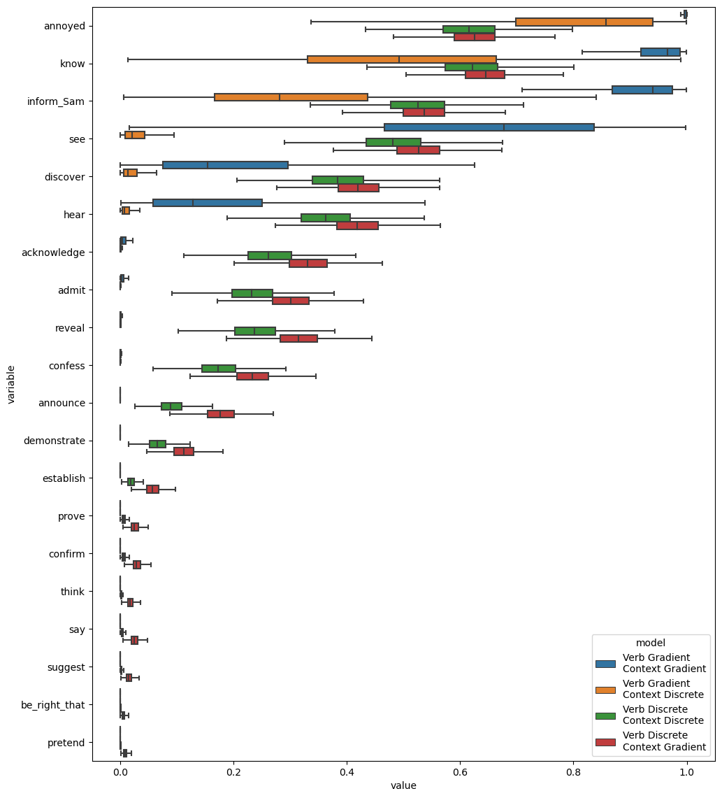
One interesting thing to note here is that both the fully gradient model (verb gradient-context gradient) and the contrext discrete model (verb gradient-context discrete) tend to have much more extreme probabilities associated with each verb than the two other models. We can see this pattern even more clearly if we plot the mean value for each verb.
Plotting code
from seaborn import kdeplot
mean_verb_probs_by_model = verb_probs.groupby(["model", "variable"]).value.mean().reset_index()
_ = kdeplot(
mean_verb_probs_by_model,
x="value", hue="model",
cut=0., hue_order=model_order.index
)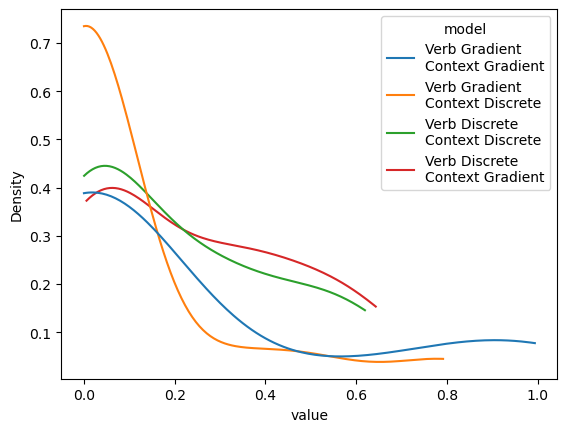
What this pattern would seem to suggest is that the two models associated with the fundamental gradience hypothesis are, in some sense, trying to simulate those associated with the indeterminacy hypothesis.
Conversely, the probabilities associated with the models associated with the indeterminacy hypothesis, suggest much more variability in projectivity–consistent with the original observation by White and Rawlins (2018) and the later observations by Degen and Tonhauser (2022) and Kane, Gantt, and White (2022). Putting the findings of Kane, Gantt, and White (2022) together with these findings would seem to lend strong support to the indeterminacy hypothesis.
Modeling the bleached and templatic data
To further evaluate these models, let’s fit the variants discussed in the last section to the bleached and templatic datasets. The main change in how we fit these models–compared to the models we fit to Degen and Tonhauser data–is that we’ll use the models fit to their data to determine the verb-specific priors on the by-verb random intercepts.
Modeling the bleached data
First, we’ll fit to the bleached data.
Load bleached data
data_projection_bleached = load_projection_data(
os.path.join(
data_dir,
"projective-probability-replication/bleached.csv"
)
)
data_projection_bleached["workerid"] = data_projection_bleached.participantfully_discrete_projection_model_bleached = FullyDiscreteProjectionModel(
fully_discrete_projection_model, use_context_prior=False
)
fully_discrete_projection_model_bleached.fit(
data_projection_bleached, map_initialization=False,
)verb_discrete_projection_model_bleached = VerbDiscreteProjectionModel(
verb_discrete_projection_model, use_context_prior=False
)
verb_discrete_projection_model_bleached.fit(
data_projection_bleached, map_initialization=False,
)context_discrete_projection_model_bleached = ContextDiscreteProjectionModel(
context_discrete_projection_model, use_context_prior=False
)
context_discrete_projection_model_bleached.fit(
data_projection_bleached, map_initialization=False,
)fully_gradient_projection_model_bleached = FullyGradientProjectionModel(
fully_gradient_projection_model, use_context_prior=False
)
fully_gradient_projection_model_bleached.fit(
data_projection_bleached, map_initialization=False,
)In running the model comparison, we observe the same pattern of results we observed for Degen and Tonhauser’s data.
projection_model_bleached_comparison = compare({
"Verb Discrete\nContext Discrete": fully_discrete_projection_model_bleached.model_fit,
"Verb Discrete\nContext Gradient": verb_discrete_projection_model_bleached.model_fit,
"Verb Gradient\nContext Discrete": context_discrete_projection_model_bleached.model_fit,
"Verb Gradient\nContext Gradient": fully_gradient_projection_model_bleached.model_fit
})Plotting code
_ = plot_compare(projection_model_bleached_comparison)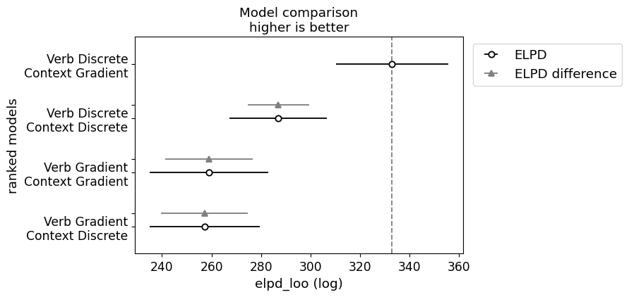
We can also see that the standard deviation of the by-context intercepts is extremely small–especially compared to the standard deviations of the by-subject intercepts.1
Plotting code
_ = plot_forest(
verb_discrete_projection_model_bleached.model_fit,
var_names=["context_intercept_std", "subj_intercept_verb_std", "subj_intercept_context_std"],
combined=True,
figsize=(11.5, 2),
)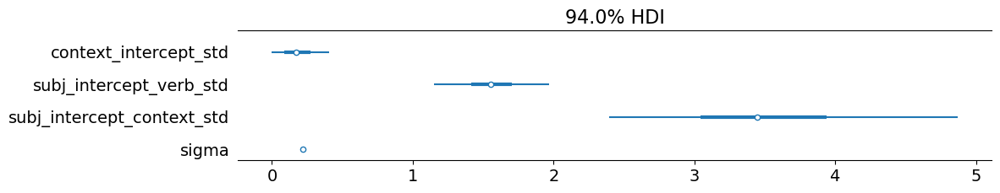
This small standard deviation is what we should expect here: one cannot in fact have prior beliefs about the beliefs contexts, so subjects just assume that the bleached content has a roughly 50-50 chance of being true.
Modeling the templatic data
We’ll do the same for the templatic data.
Load templatic data
data_projection_templatic = load_projection_data(
os.path.join(
data_dir,
"projective-probability-replication/templatic.csv"
)
)
data_projection_templatic["workerid"] = data_projection_templatic.participantfully_discrete_projection_model_templatic = FullyDiscreteProjectionModel(
fully_discrete_projection_model, use_context_prior=False
)
_ = fully_discrete_projection_model_templatic.fit(
data_projection_templatic, map_initialization=False,
)verb_discrete_projection_model_templatic = VerbDiscreteProjectionModel(
verb_discrete_projection_model, use_context_prior=False
)
_ = verb_discrete_projection_model_templatic.fit(
data_projection_templatic, map_initialization=False,
)context_discrete_projection_model_templatic = ContextDiscreteProjectionModel(
context_discrete_projection_model, use_context_prior=False
)
_ = context_discrete_projection_model_templatic.fit(
data_projection_templatic, map_initialization=False,
)fully_gradient_projection_model_templatic = FullyGradientProjectionModel(
fully_gradient_projection_model, use_context_prior=False
)
_ = fully_gradient_projection_model_templatic.fit(
data_projection_templatic, map_initialization=False,
)projection_model_templatic_comparison = compare({
"Verb Discrete\nContext Discrete": fully_discrete_projection_model_templatic.model_fit,
"Verb Discrete\nContext Gradient": verb_discrete_projection_model_templatic.model_fit,
"Verb Gradient\nContext Discrete": context_discrete_projection_model_templatic.model_fit,
"Verb Gradient\nContext Gradient": fully_gradient_projection_model_templatic.model_fit
})In running this model comparison, we observe a similar pattern of results, with the verb discrete model pulling even father ahead.
Plotting code
_ = plot_compare(projection_model_templatic_comparison)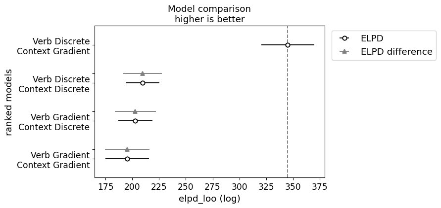
As expected, we also observe that the standard deviation of the by-context intercepts is extremely small, which we expect for the same reasons we expected in for the models fit to the bleached data.
Plotting code
_ = plot_forest(
verb_discrete_projection_model_templatic.model_fit,
var_names=["context_intercept_std", "subj_intercept_verb_std", "subj_intercept_context_std"],
combined=True,
figsize=(11.5, 2),
)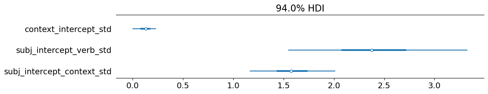
Summing up
In this module, we considered two subtly distinct questions: (i) whether there is evidence for discrete classes of lexical representations that determine inferences commonly associated with factive predicates or whether this knowledge is fundamentally continuous; and (ii) how, for aspects of lexical knowledge that are fundamentally continuous, that knowledge is integrated with world knowledge. Relevant to the first question, we saw evidence from Kane, Gantt, and White (2022) that, when we appropriately account for various sources of gradience in inference judgments, we observe a small number of clear cluster of predicates, all of which correspond cleanly to the predicate classes one might expect from the literature of clause-embedding predicates and a subset of which correspond to traditional subclassifications of factives. To address the second question, we modeled data collected by Degen and Tonhauser (2021) showing that models assuming that gradience comes from indeterminacy outperform models that assume fundamental gradience.
References
Degen, Judith, and Judith Tonhauser. 2021. “Prior Beliefs Modulate Projection.” Open Mind 5 (September): 59–70. https://doi.org/10.1162/opmi_a_00042.
———. 2022. “Are There Factive Predicates? An Empirical Investigation.” Language 98 (3): 552–91. https://doi.org/10.1353/lan.0.0271.
Kane, Benjamin, Will Gantt, and Aaron Steven White. 2022. “Intensional Gaps: Relating Veridicality, Factivity, Doxasticity, Bouleticity, and Neg-Raising.” Semantics and Linguistic Theory 31 (January): 570–605. https://doi.org/10.3765/salt.v31i0.5137.
White, Aaron Steven, and Kyle Rawlins. 2018. “The Role of Veridicality and Factivity in Clause Selection.” In Proceedings of the 48th Annual Meeting of the North East Linguistic Society, edited by Sherry Hucklebridge and Max Nelson, 221–34. Amherst, MA: GLSA Publications.
Footnotes
Remember that this standard deviation is in log-odds space.↩︎